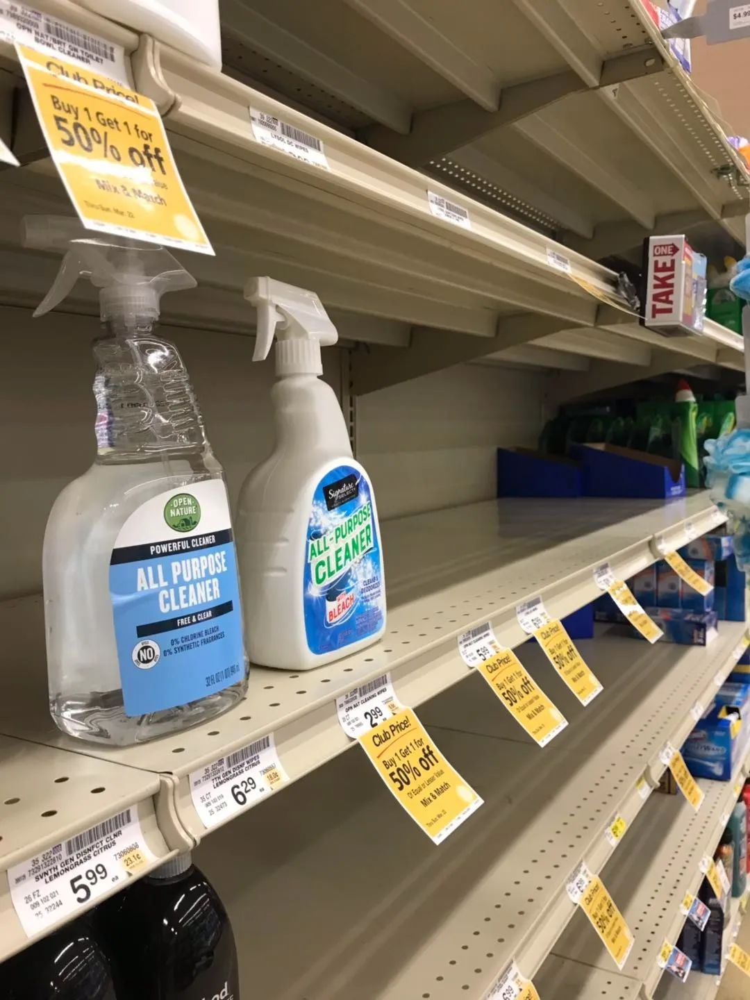

美国出现首例死亡病例，西海岸疫情警报四起
原文链接 备份链接 美国冠状肺炎疫情近日加速蔓延，西海岸社区传播疑似病例增加 工作人员把一个担架从救护车移至柯克兰生命护理中心，该护理中心已发现两起新型冠状病毒的确诊病例。图/法新 文 |《财经》特派记者 金焱 发自华盛顿 编辑 | 苏 …

CDC表示一天能做的测试只有100个，有些力不从心。
文、图 | 李 莹
今天（3月2日）是我滞留在美第38天#详见《口述实录 | 我大年夜出发去美国自助游，直到现在还被困在旧金山》#，美国已有100例新冠病毒感染肺炎病例，其中包括6例死亡病例，这里的人们也开始有些紧张了。
上周我出门了两次，一次去CVS药房买口罩未果，一次在斯坦福购物广场，没有一人戴口罩。
斯坦福购物广场
而新闻里已经热闹起来，一方面美国疾病控制与预防中心（CDC）中心不断提醒人们，疫情在社区传播只是时间问题，美国不可能在全球化影响下还能独善其身；而另一方面，特朗普和他的副总统不断在晚间发布会里说，美国有能力控制和应对疫情。
但华尔街和老百姓不买账，从2月24日-28日那一周，股市一泻千里，道琼斯指数一周跌了12.36%，这是1900年以来周跌幅排名第十的最大跌幅，排名第一的是1914年的第一次世界大战爆发那周。这个从不说谎的市场，让人充分感受到对疫情在全球蔓延的无比担忧。
上周五，我所在的美国旧金山湾区圣克拉拉县确诊第四例新冠肺炎病例。美国哥伦比亚广播公司报道称，该感染者是一名成年女性，是第三例的亲属。华人圈瞬间爆了，大家在疯狂地在网上查询着这个人是不是自己社区的，这个人有没有家人在上班或者读书。
然后就是抢购潮到来，朋友圈内分享着到哪个超市米、油、方便食品还有货，哪能买到口罩和消毒用品，并附上人们疯狂从货架上搬运物资和大排长龙结账的照片。

上周六傍晚，朋友突然接到公司（世界五百强之一）的紧急电话通知，问询员工有没有接触过确诊病例，如果有需要帮助他们会立即派专人处理。空气紧张了几分钟后，我们决定周日得去买点战备物资，不能坐以待毙。
我们首先来到美国人超市，令人吃惊的是，不管是袋装还是散装的大米、麦片、红豆、黑豆都没了，一个女士扫空了冰柜里六大盒鸡腿肉！问了下店员，他表示不知发生了什么，这些东西都卖空了！

我们再转战另一家价格稍高的美国超市，同样的袋装大米、清洁用品都没了，一对华人情侣戴着口罩推着满满一购物车食品，其中有一半是罐头。

于是朋友说要转变思路去墨西哥人超市，因为那里华人较少，而墨西哥人平时注重享乐，对新闻时事漠不关心，可能会有收获，于是他带着我们去到了鲜有涉足的墨西哥人社区。最终证明他的生活经验是对的，我们顺利地买到了居然还在促销的米、方便面以及超便宜的蔬菜水果，但从停车场里此起彼伏的汽车较劲轰鸣声就能感觉到这个社区的人脾气火爆、互不相让。
直到美西时间3月2日下午2点，加州已经有确诊的新冠病例33例，CNN、YOUTUBE都在热点位置刊发了相关新闻，有去埃及旅游史的，也有多名因早期未做防护措施护理感染者而被传染的医务人员。而最让美国人气愤的，就从武汉撤侨包机或钻石公主号上下来的人，人们纷纷指责在撤侨包机上，只是用一块白布围起来表示隔离的措施太过轻率。而后，美国疾病控制与预防中心（CDC）又连续犯错，先是将钻石公主号上的人送到观察点时仅船上下来的人戴了口罩，而CDC的护送的人完全没有任何防护，传闻事后还在小镇上转悠了一圈；后将检测次数不足、从阴转阳的患者释放出观察点。
连得克萨斯州州长格雷格·阿伯特（Greg Abbott）都站出来放话，“这是不可原谅的，CDC必须做的是，改进其流程，并且必须绝对确定在释放这些人之前，他们都没有新型冠状病毒，不论是轻度还是重度。”而CDC表示一天能做的测试只有100个，有些力不从心。
今天（3月2日）美股道琼斯指数强力反弹，但朋友们说还是赶紧抛，毕竟这场疫情在美国才刚刚开始。

征集令
《新民周刊》现面向全国征集新冠肺炎采访对象和真实故事：
如果你是参与抗击新冠肺炎疫情的医护人员或其家属，我们希望聆听你的“战疫”故事，也希望传达你的诉求。
如果你是确诊、疑似患者本人或家属，我们希望了解你和家人如何“抗疫”的过程，让外界了解你的真实经历。
如果你是疫情严重地区的普通市民，我们希望展现你的乐观，并倾听你所需的帮助。
如果你是公共服务人员或各类捐助者，我们希望看到你的“最美逆行”，记录下你的无私。
如今，各行各业开始陆续有序复工，如何在疫情中有序恢复经济生产，我们希望了解其中的困难，或是暖心故事。
……
抗击新冠肺炎疫情，我们诚征对疫情了解的社会各界人士，提供相关线索，说出你的故事，让我们用新闻留存这一切。
《新民周刊》新冠肺炎线索征集值班编辑联系方式（添加时请简要自我介绍）：
周一：应 琛 微信号：paulineying0127
周二：金 姬 微信号：gepetta
周三：黄 祺 微信号：shewen-2020
周四：周 洁 微信号：asyouasyou
周五：孔冰欣 微信号：kbx875055141
周六：吴 雪 微信号：shyshine1105
周日：姜浩峰 微信号：jianggeladandong
✳如你需要捐赠物资，可与以下两位工作人员联系:王勇：WangYong-SH 吴轶君：rommy150708（添加时请注明“捐物资”，方便工作人员快速通过您的申请，谢谢。）
新闻是历史的底稿，你们是历史的见证者。期待你的故事、你的线索！

▼
大家还都在看这些
▼
新民周刊所有平台稿件， 未经正式授权
一律不得转载、出版、改编或进行
与新民周刊版权相关的其他行为，违者必究


原文链接 备份链接 美国冠状肺炎疫情近日加速蔓延，西海岸社区传播疑似病例增加 工作人员把一个担架从救护车移至柯克兰生命护理中心，该护理中心已发现两起新型冠状病毒的确诊病例。图/法新 文 |《财经》特派记者 金焱 发自华盛顿 编辑 | 苏 …
原文链接 备份链接 当地时间2月29日，美国华盛顿州西雅图市国王县卫生官员报告称，一名50多岁的男性新冠肺炎患者当天在当地一家医院死亡。这是美国首例新冠肺炎患者死亡该病例，就死者感染路径，美国疾控中心国家免疫和呼吸系统疾病主任梅索尼 …
原文链接 备份链接 文 | 谢九 在中国的疫情逐渐缓和之际，中国之外的疫情却突然爆发升级。2月25日以来，中国境外新增的确诊病例已经超过了中国境内，新冠肺炎疫情进入全球化的2.0阶段。 目前，韩国的新增确诊人数已经超过了中国，日本、伊朗、 …
原文链接 备份链接 小舅婆在战“疫”前线战斗，有有做了战地后方的“小记者”。画画内容的变化也悄然诉说着疫情的变化。 编者按 当很多小朋友把寒假过得快腻味的时候，有个叫有有的小朋友，却找到了一件有趣的持之以恒的事情——画抗疫漫画。 有有，大 …
原文链接 备份链接 总体而言，港人对待疫情，后来就没有内地那么紧张了。我妈妈讲，她觉得作为一个香港居民，自己最大的感受是彷徨。她抱怨道，在香港，没工开等于没饭吃了；公司起先通知放假到24号，何时复工再议，而现在仍然是等通知的状态。 …